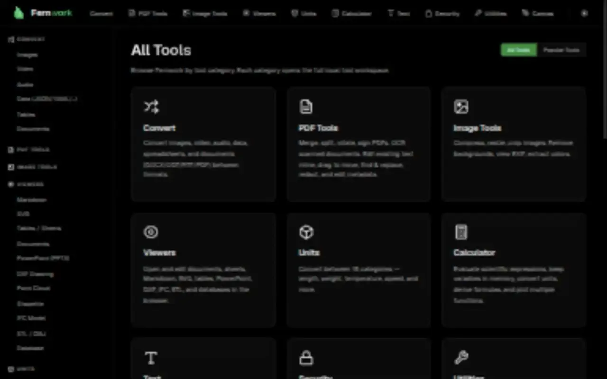
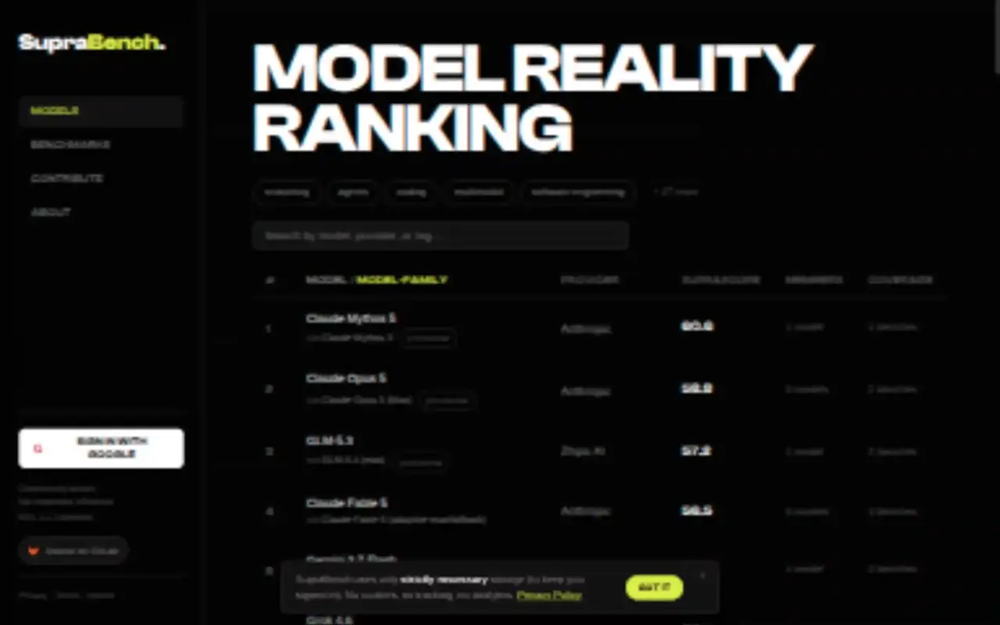
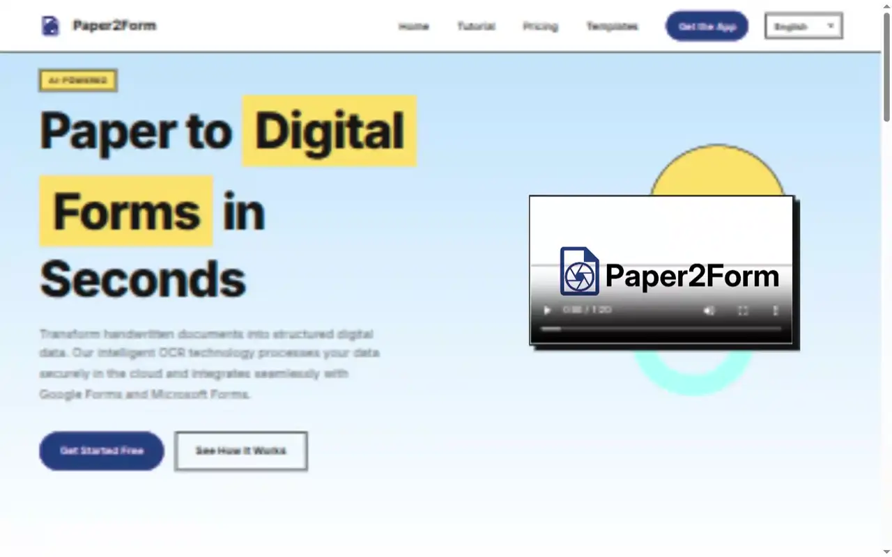

Selected software projects
by Florian Fischer.
Ausgewählte Softwareprojekte
von Florian Fischer.
Scroll
Selected   
Ausgewählte Softwareprojekte von Florian Fischer
Fernwork
A private workspace for PDFs, images, video, office documents, CAD and everyday utilities. Files are processed locally in the browser — without uploads. Ein privater Arbeitsplatz für PDFs, Bilder, Video, Office-Dokumente, CAD und alltägliche Werkzeuge. Dateien werden lokal im Browser verarbeitet — ohne Upload.
Open fernwork.net fernwork.net öffnenSupraBench
AI model rankings that weigh benchmark quality, difficulty, saturation and community trust instead of rewarding bench-maxing. KI-Modellrankings, die Qualität, Schwierigkeit, Sättigung und Vertrauen in Benchmarks gewichten, statt Bench-Maxing zu belohnen.
Open suprabench.com suprabench.com öffnenPaper2Form
Turns scanned paper and handwritten documents into structured data, then transfers detected fields into Google Forms or Microsoft Forms. Verwandelt gescannte und handschriftliche Dokumente in strukturierte Daten und überträgt erkannte Felder in Google Forms oder Microsoft Forms.
Open paper2form.com paper2form.com öffnen